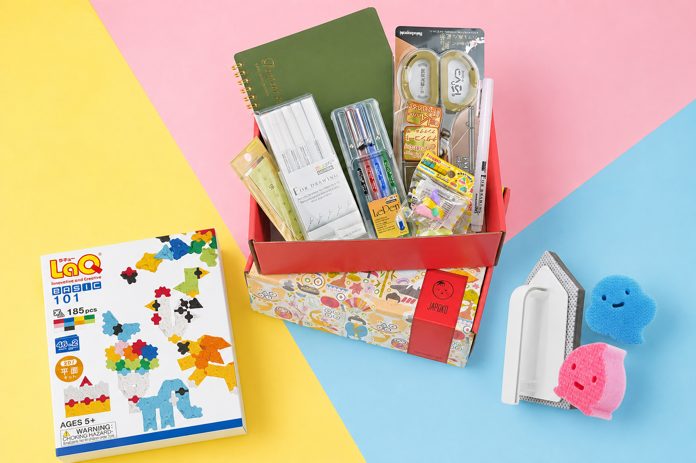

| SUKURTA JAPONIJOJE ● ATRINKTA JUMS | |||
|
Japoniškas požiūris
KAS ČIA KITAIP?Mažiau triukšmo. Daugiau minties detalėse, kurias pajuntame kasdien. | |||
 | |||
|
„Rinkdama asortimentą ieškau ne vien gražių daiktų. Man svarbu, ar gamintojas išsprendė tikrą kasdienybės problemą, ar daiktą malonu naudoti ir ar jo kokybę pajusite ne tik pirmą, bet ir šimtąjį kartą.“ Metodija Vidūnaitė · JAPOKO įkūrėja | |||
|
Trys kasdienybės kryptys
SKIRTUMAS ATSISKLEIDŽIA
| |||
| |||
| |||
| |||
 | |||
|
Vieno produkto istorija
VISKAS PRASIDĖJO NUO VIENO LAQ KONSTRUKTORIAUSLaQ iš vos septynių skirtingų detalių leidžia kurti plokščias ir erdvines formas. Būtent šis japoniškas paprastumo ir galimybių derinys tapo vienu pirmųjų JAPOKO atradimų.
| |||
| LAQ • KANCELIARIJA • NAMAMS | |||
| MB „Creator Japonicus“ · Bajorų g. 9, Migūnai, Vilniaus raj., LT-13243, Lietuva japoko.com · info@japoko.com Šį laišką gavote, nes užsiprenumeravote JAPOKO naujienas. Atsisakyti naujienlaiškio |